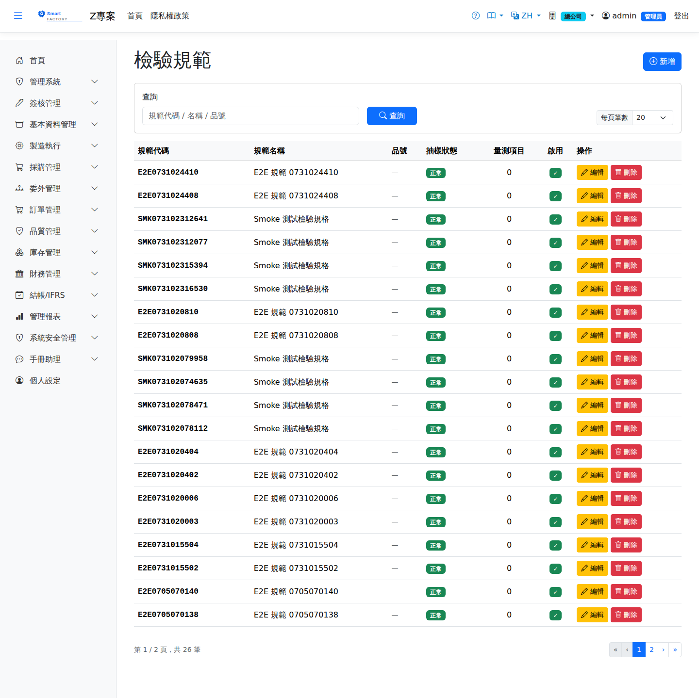

檢驗規範Inspection Specs
路由：/InspectionSpec | 品號檢驗項目/規格上下限定義Route: /InspectionSpec | Defining inspection items and specification limits per item
定義各品號的檢驗項目（量測值型/判定型）、規格中心值與上下限、使用儀器與抽樣要求。檢驗單依規範自動產生檢驗項目，量測值並供 SPC 分析。Defines the inspection items for each product (variable or attribute), the target value and specification limits, the instrument to use and the sampling requirement. Inspection orders take their items from the spec, and the measured values feed SPC analysis.

檢驗規範畫面截圖（示意，實際欄位/資料依權限與查詢條件而異）Inspection spec screenshot (illustrative; actual fields and data vary by permission and query criteria)
查詢Search
1
查詢列輸入條件後點「查詢」；欄位標題可點擊排序，清單下方有分頁導航。Enter your criteria on the query bar and click "Search"; column headers can be clicked to sort, and the paging controls sit below the list.
作業流程Process
建立規範Create spec
1
點「新增」選品號與檢驗階段（IQC/IPQC/FQC）。Click "Add" and choose the item and the inspection stage (IQC / IPQC / FQC).
2
逐項加入檢驗項目：名稱、型態（量測/判定）、規格上下限、單位與儀器。Add the inspection items one by one: name, type (variable or attribute), specification limits, unit and instrument.
3
儲存後新檢驗單即依此產生項目。Once saved, new inspection orders take their items from it.
欄位說明Field reference
查詢條件Query criteria
| 條件Condition | 說明Guide |
|---|---|
| 查詢Search | 規範代碼或名稱的模糊比對Partial match on the spec code or name |
基本欄位Basic fields
| 欄位Field | 說明Guide |
|---|---|
| 規範代碼Spec Code | 必填Required 唯一識別，建立後不可修改Unique identifier; cannot be changed after creation |
| 規範名稱Spec Name | 必填Required 此檢驗規範的用途說明Description of what the inspection spec is for |
| 品號Item | 適用的料件；留空表示全品號通用Item it applies to; leave blank to apply to all items |
| 供應商Supplier | 適用的供應商（IQC 使用）；留空表示全供應商通用Supplier it applies to (used by IQC); leave blank to apply to all suppliers |
| 抽樣類型Sampling Type | 計數型（Attribute，判定合格／不合格）或計量型（Variable，量測數值）Attribute (judged pass or fail) or variable (a measured value) |
| 觸發模式Trigger mode | Always 每次都檢／Periodic 定期抽驗（另設間隔小時數）／OnDemand 需要時才開單。IPQC 使用Always (inspect every time) / Periodic (sample at a set interval in hours) / OnDemand (raise an order only when needed). IPQC uses |
| 完工需 FQCFQC required on completion | 勾選後工單完工入庫前必須先通過完工檢驗，未通過不得繳庫When ticked, a work order must pass final inspection before it can be received into stock |
| 銷退需 RQCRQC required on sales return | 勾選後銷貨退回確認時自動建立退貨檢驗單When ticked, confirming a sales return automatically creates a return inspection order |
| 啟用Active | 停用後不再套用此規範Once inactive, the spec no longer applies |
抽樣切換規則（MIL-STD-1916）Sampling switching rules (MIL-STD-1916)
| 欄位Field | 說明Guide |
|---|---|
| 正常抽樣 VLNormal sampling VL | 一般狀態使用的驗證等級（預設 VL-IV）Verification level used in the normal state (VL-IV by default) |
| 加嚴抽樣 VLTightened sampling VL | 出現不合格後改用的較嚴等級（預設 VL-VI）The tighter level used after a failure (VL-VI by default) |
| 減量抽樣 VLReduced sampling VL | 連續合格後可放寬的等級（預設 VL-II）The looser level allowed after consecutive acceptances (VL-II by default) |
| 轉減量所需連續合格批數Consecutive accepted lots needed to move to reduced | 在「正常」狀態連續合格達此批數即降為「減量」（預設 5）This many consecutive accepted lots in the normal state drops it to reduced (5 by default) |
| 恢復正常所需連續合格批數Consecutive accepted lots needed to return to normal | 在「加嚴」狀態連續合格達此批數即回到「正常」（預設 3）This many consecutive accepted lots in the tightened state returns it to normal (3 by default) |
| 啟用跳批 / 跳批頻率 / 進入跳批批數Skip-lot enabled / Skip frequency / Lots to enter skip-lot | 選配的 Skip-Lot 機制：須先在「減量」狀態連續合格達指定批數才進入跳批，之後每 N 批才實際抽驗 1 批An optional skip-lot scheme: the required number of consecutive accepted lots has to be reached in the reduced state before skip-lot starts, after which only 1 lot in every N is actually inspected |
量測項目Measurement item
| 欄位Field | 說明Guide |
|---|---|
| 項目名稱Item Name | 必填Required 要量測的品質特性（如外徑、厚度）The quality characteristic to measure (outside diameter, thickness …) |
| 單位UOM | 量測值的計量單位Unit of measure of the value |
| LSL / Target / USL | 規格下限、目標值、規格上限。計量型抽樣以此判定合格，並作為 SPC 製程能力（Cp／Cpk）的計算基準Lower limit, target and upper limit. Variable sampling judges acceptance against them, and they are the basis of the SPC capability calculation (Cp / Cpk) |
| 儀器1 / 儀器2 / 儀器3Instrument 1 / Instrument 2 / Instrument 3 | 可用於此項目的量測儀器；未在校正效期內的儀器不應使用Instruments that can be used for this item; an instrument outside its calibration period should not be used |